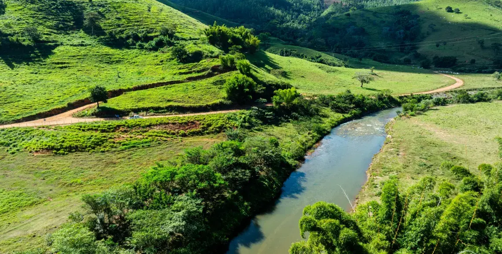
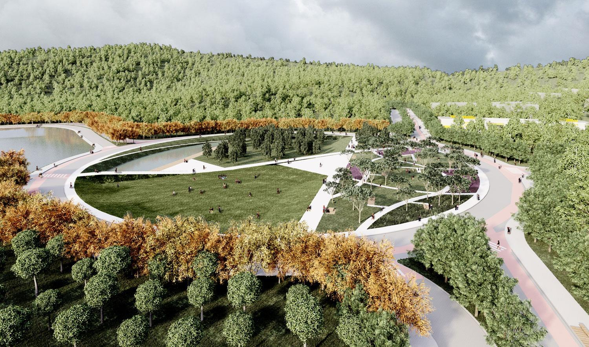
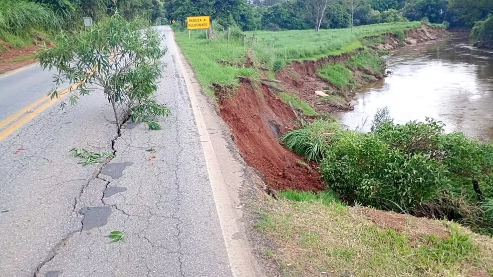
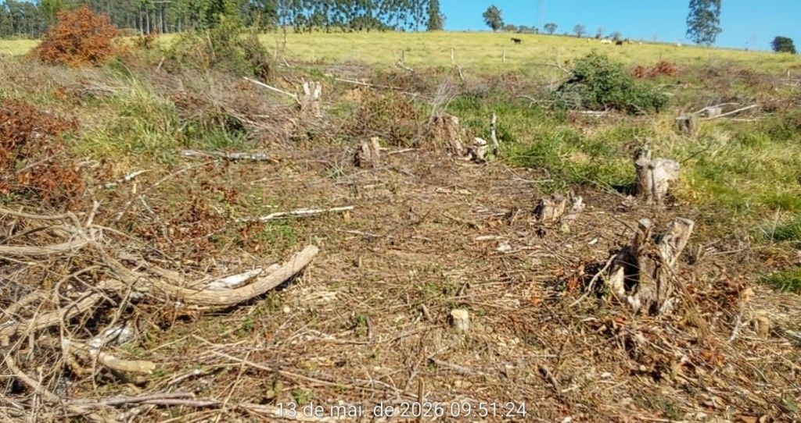
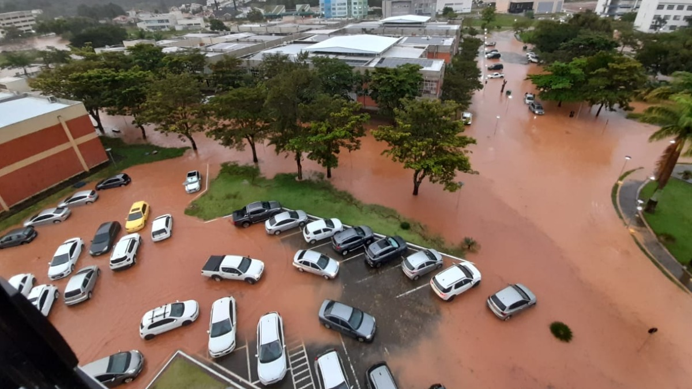

ÁREAS DE PRESERVAÇÃO PERMANENTE


As APPs são essenciais para manter o equilíbrio ambiental e garantir qualidade de vida para as pessoas. Elas protegem os recursos hídricos, ajudam no controle do clima, preservam a biodiversidade e diminuem impactos causados pelo crescimento urbano e pelo desmatamento. Em cidades como Itajubá, onde existem muitos rios e áreas montanhosas, a preservação dessas áreas é fundamental para evitar problemas ambientais e proteger o futuro da região.

Em Itajubá, as Áreas de Preservação Permanente (APPs) desempenham um papel fundamental na manutenção do equilíbrio ambiental da cidade. Essas áreas podem ser encontradas em locais estratégicos, como as margens do Rio Sapucaí, nas proximidades das nascentes e nas encostas dos morros cobertos por mata nativa — regiões que, por sua fragilidade ecológica, exigem proteção especial. A presença das APPs vai muito além da simples conservação da paisagem. São elas que garantem a qualidade e a quantidade da água disponível para a população, funcionando como filtros naturais que protegem os cursos d'água do assoreamento e da contaminação. Além disso, a vegetação nessas áreas age como uma esponja, absorvendo as águas das chuvas e reduzindo significativamente o risco de enchentes —
problema que afeta diretamente a vida de muitos moradores da cidade, especialmente em períodos de maior precipitação. As matas nas encostas dos morros, por sua vez, cumprem um papel igualmente importante: seguram o solo e evitam deslizamentos, protegendo tanto o meio ambiente quanto as comunidades que vivem nessas regiões. No entanto, apesar de toda a sua importância, as APPs de Itajubá enfrentam sérias ameaças. O desmatamento, as queimadas, o descarte irregular de lixo e a ocupação desordenada por construções inadequadas são problemas recorrentes que comprometem a integridade dessas áreas e colocam em risco os serviços ambientais que elas prestam à cidade. Diante desse cenário, fica evidente que preservar as APPs não é apenas uma obrigação legal, mas uma necessidade coletiva. A conscientização da população, aliada à fiscalização eficiente e a políticas públicas de recuperação ambiental, é essencial para garantir que essas áreas continuem cumprindo seu papel vital — protegendo a natureza e assegurando uma melhor qualidade de vida para todos os habitantes de Itajubá.



A preservação ambiental é essencial para garantir qualidade de vida para a população e proteger os recursos naturais da cidade.
Em Itajubá, alguns problemas ambientais vêm chamando atenção, como o desmatamento, o descarte irregular de lixo em rios e as construções em áreas inadequadas.
Este site apresenta exemplos educativos desses problemas, seus impactos e possíveis soluções para conscientizar a população.
Os problemas ambientais em Itajubá estão cada vez mais visíveis e afetam diretamente a qualidade de vida da população. Entre os principais fatores estão o crescimento urbano desordenado, o descarte incorreto de resíduos e a redução de áreas verdes.
Esses problemas não acontecem isoladamente. O desmatamento, por exemplo, contribui para o aumento da temperatura e facilita enchentes. Já o lixo descartado de forma irregular pode obstruir rios e bueiros, causando alagamentos e prejudicando bairros inteiros.
Além disso, a ocupação de áreas de risco para construção de casas e comércios aumenta a chance de deslizamentos e outros acidentes ambientais, principalmente em períodos de chuva.
Por isso, é fundamental a conscientização da população e a adoção de práticas sustentáveis, como o descarte correto do lixo, preservação de áreas verdes e respeito às leis ambientais.
A redução das áreas verdes contribui para o aumento da temperatura na cidade, deixando o clima mais quente e seco.
O descarte irregular de lixo em rios e bueiros dificulta o escoamento da água da chuva.
O desmatamento prejudica diversas espécies de animais e plantas, reduzindo a biodiversidade.
O combate aos problemas ambientais depende da colaboração da população, das empresas e do poder público. A coleta seletiva, o descarte correto do lixo, o plantio de árvores e a preservação dos rios são ações que ajudam a reduzir os impactos ambientais.